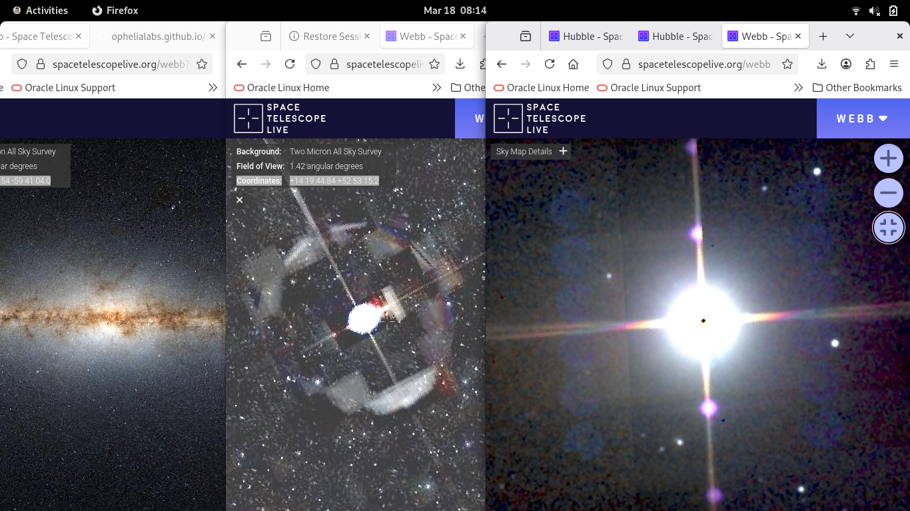
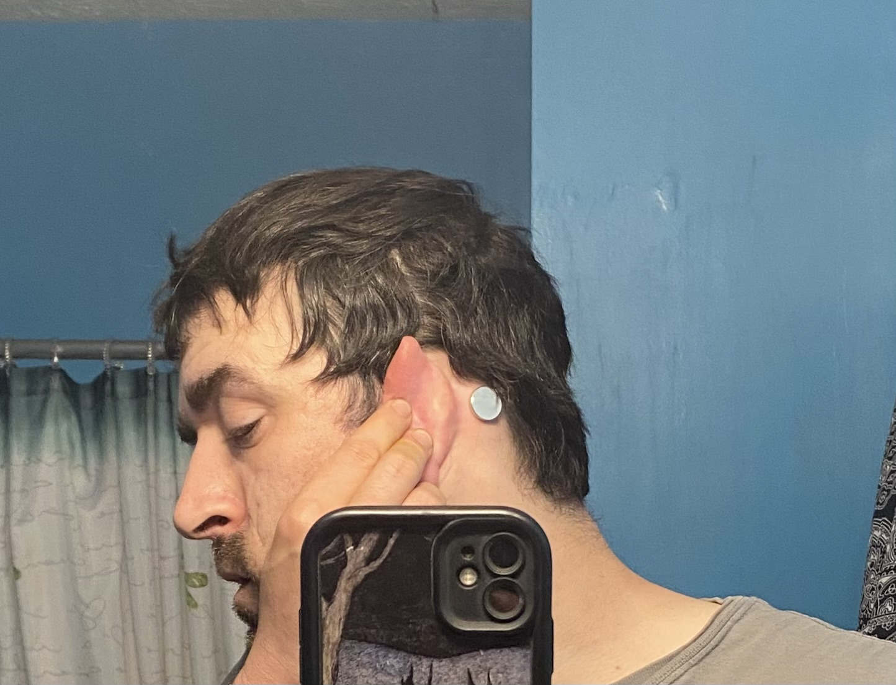
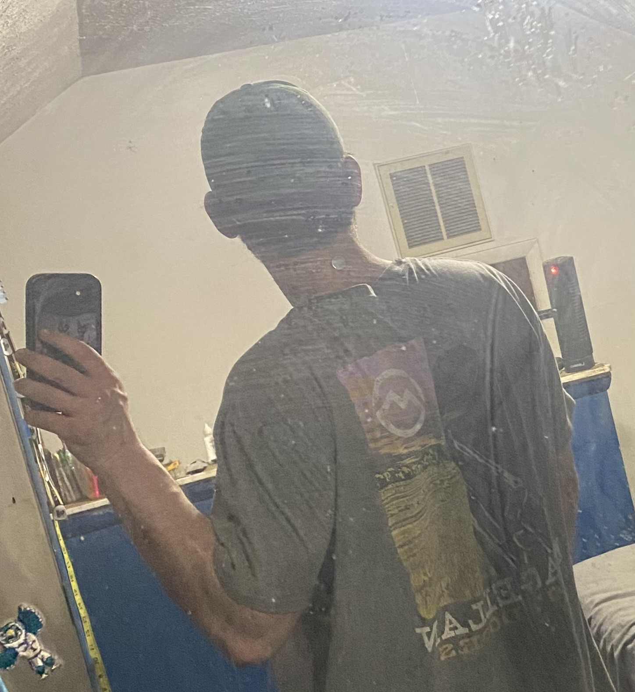
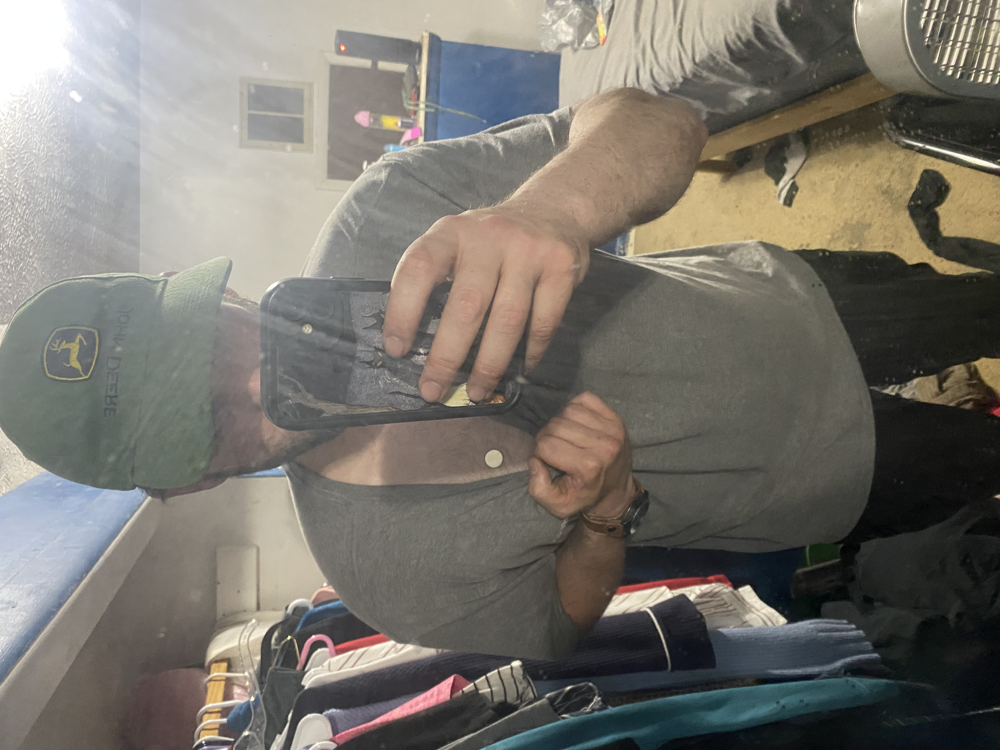

CoOp Behavior / Emerging fiber-based neural interfaces

- The APT/***ALADIN*** combination is the visual and logic "engine"


DARPA's NESD program has developed implantable, high-resolution neural interfaces. Implanting them in their ***SLEEP***. Note: Flashing light and mirrors to aid in camera detection. Think Bi-Directional Bone Anchored Hearing Systems or Behind The Ear Hearing Aids.
Verbatim (Note: The Order of Operations)
- "***AI*** is going to learn a lot"
- "How can I ***see what he/she sees?***"
- "Seeing behind ***The Curtain***"
- "Put them in a "***Container***"
- "What is his/her Itinerary? And what is the ***Exit Strategy***"
SPLIT


Note: The complete absence of the Neodymium magnetic pole attraction next to the aluminum ***WATCH***
- "Who are they on the ***phone*** with?"
- "Trying to do our job for us. ***Hand it off to me***"
- "Lets make it deep." / Self-Healing
- Bi-direction will now become "dulled"
Privileges
02/22/26: "They're about to get control over this"
03/25/26: "I would like to reduce their amount of access"
Note: The Screen Saver will be a mix of the two
- Where is my companion!?
Two sides to every coin:
- The ***PATCH***
- NESD | AI | ESnet(Deleria) | LLE | CSDAP | QCon
- The Nanosat carries a Q-NET-compatible laser terminal (808 nm linearly polarized beacon laser optic), or a high-frequency Ka-band radio (page 34, quarter-wave dipole).
- Optical Communication Systems: Space-to-ground optical terminals operate at 808 nm and Ka-band frequencies for satellite communication.
- The Link: Fiber-based neural interfaces transmit data to a local ground terminal (running your AWS K3/Go/Envoy stack). Note: MEG (magnetoencephalography) is non-invasive brain imaging; implantable fiber interfaces are separate technology.
- CSDAP is a NASA Earth data platform providing satellite imagery and geospatial data for monitoring.
- Directions: Current neural interfaces (like Neuralink) demonstrate motor control decoding. Advanced algorithms like hyperQUEEN represent emerging ML techniques for visual reconstruction.
Training
- ASE / MatSCI / SciX (YT)
- Generic Constraints / .NET 2026
- How to Code in Quantum Machine Learning for Medical Applications
- Materials Project Seminars
- Springer Training
Citations
- Optical Quantum Ground Station for QEYSSat: Operations Planning Activities
- Bostonpiezooptics: A resource for Optical Components
- Advances and perspectives in fiber-based electronic devices for next-generation soft systems
- Advanced Materials
- Capacitive Soft Strain Sensors via Multicore–Shell Fiber Printing
- Optical Noninvasive Brain–Computer Interface Development: Challenges and Opportunities
- In Vivo Evaluation of Thermally Drawn Biodegradable Optical Fibers as Brain Implants
- Emerging fiber-based neural interfaces with conductive composites
- 18th Annual Space Operations Conference
- HyperQUEEN: Hyperspectral Quantum Deep Network For Image Restoration